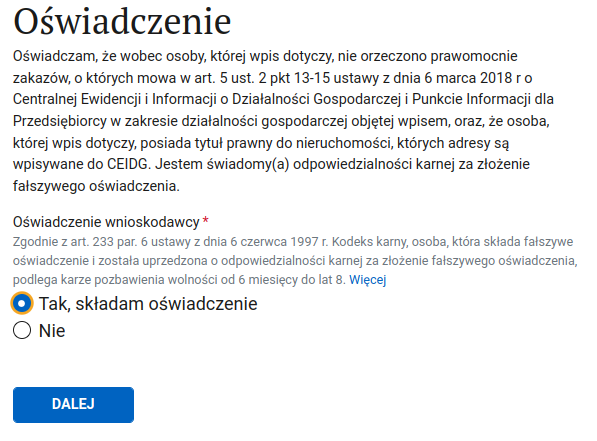

Регистрация плательщиком внутрипольского VAT¶
Зачем регистрировать польский VAT
Польский VAT вам понадобится если вы оказываете услуги польским заказчикам и превысили годовой лимит в 240_000 злотых. Либо вы хотите возвращать VAT c покупок на фирму.
Note
К этому моменту у вас уже должны быть номера NIP и REGON.
Ссылка на портал где происходит регистрация.
Нам нужен пункт Zmień dane w CEIDG.
1. Нас встречает важная информация¶
Ознакамливаемся и жмём DALEJ
2. Цель подачи формы¶
Нам надо только отредактировать данные. Дата может быть текущей или в прошлом. Выбирайте сегодняшнюю.
2.1. Указываем страхование¶
Отмечаем галочку ZUS
3. Выбираем данные, которые нужно изменить¶

4. Выбираем пункт о регистрации плательщиком VAT¶

5. Отказываемся от освобождения¶
Вы можете зарегистрироваться как плательщик VAT по собственному желанию, чтобы списывать VAT с покупок на фирму (например, ноутбук, телефон, мебель).
Здесь нужно отказаться от освобождения от VAT (лимит 240_000) иначе czynnym плательщиком мы не станем.
Обратите внимание
C момента регистрации VAT плательщиком вы обязаны выставлять польским заказчикам инвойсы с VAT, и, соответственно, его уплачивать.

6. Причина регистрации VAT-овцем¶
Выбираем Tytuł obowiązku podatkowego.
Ниже приведено описание наиболее часто обсуждаемых пунктов в телеграм чате "ИП в Польше" (тег заметки для бота Rose: #WhenVATIsRequired).
Podmiotowe (по доходу)
| Nazwa i Podstawa prawna | Opis |
|---|---|
| podatnik rozpoczynający działalność gospodarczą nie ma prawa do zwolnienia, o którym mowa w art. 113 ust. 1 lub 9 ustawy | ИП начинает деятельность, но не имеет права на освобождение по доходу. (если не имеете права работать без VAT, т.е. деятельность связана с консультациями либо ваш код деятельности подразумевает обязательную регистрацию на VAT) |
| podatnik rezygnuje (zrezygnował) ze zwolnienia, o którym mowa w art. 113 ust. 1 lub 9 ustawy | ИП добровольно отказывается от освобождения по доходу. (если достигнете порога дохода в 240 000 злотых / добровольная регистрация) |
| podatnik traci (utracił) zwolnienie, o którym mowa w art. 113 ust. 1 lub 9 ustawy | ИП утратил право на освобождение по доходу. (например, превысил лимит 000 zł). |
| podatnik wykonuje czynności, o których mowa w art. 113 ust. 13 ustawy | ИП выполняет действия, исключающие освобождение по доходу. (например, торговля подакцизными товарами). |
Przedmiotowe (по виду деятельности)
| Nazwa i Podstawa prawna | Opis |
|---|---|
| podatnik będzie dokonywał (dokonuje) sprzedaży wyłącznie zwolnionej od podatku od towarów i usług na podstawie art. 43 ust. 1, z wył. pkt 3, i art. 82 ustawy | ИП осуществляет только операции, освобождённые от НДС по характеру деятельности. |
| podatnik będzie korzystał (korzysta) ze zwolnienia, o którym mowa w art. 43 ust. 1 pkt 3 ustawy | ИП применяет освобождение по характеру деятельности, например, услуги в сфере образования или finansowe. |
| podatnik rezygnuje (zrezygnował) ze zwolnienia, o którym mowa w art. 43 ust. 1 pkt 3 ustawy | ИП добровольно отказывается от освобождения по характеру деятельности. |
Note
мы не приводим порядковые номера, т.к. они меняются, читайте описание внимательно и выбирайте подходящий вам.
7. Дата начала VAT обязательств¶
Дата начала VAT обязательств должна быть, как минимум, на 1 день позже даты подачи заявления. Например, если заявление высылается 28 апреля, то самая ранняя дата регистрации — 29 апреля.
Начиная с этой даты вы должны выставлять фактуры с VAT, подавать декларации и имеете право на вычеты VAT за покупки на фирму для ведения деятельности даже если вас еще не добавили в белый список плательщиков VAT.

7.1 Пункт Zwolnienie usług finansowych¶
В этом пункте (он находится под датой) ничего выбирать не нужно, но если он случайно был отмечен, то сбросить его в начальное состояние не выйдет, нужно будет вернуться на шаг назад, и снова пройти вперед
8. Metoda kasowa¶
Почитать об этой штуке можно здесь, но вообще, оно нам не нужно. Отказываемся.

9. Золото и такси¶
Указываем что не ведем бизнес, связанный с такси и торговлей золотом (если правда не ведем, конечно).

10. VAT-UE¶
Одновременно с польским VAT можно зарегистрировать VAT-UE. Если вам нужно - продолжайте по ссылке. Если не нужно - отказывайтесь и переходите к следующему пункту.

11. Выбрать тип деклараций¶
Можно подавать декларации как ежемесячно, так и поквартально. Я рекомендую выбрать ежемесячные декларации. Промежутком времени, за который будет отправлена первая декларация выберите месяц, с которого начинается ваше VAT обязательство (пункт 7 этого руководства).
12. Выберите свою налоговую¶
13. Подтверждение регистрации VAT¶
Можете отказаться от платного получения подтверждения регистрации VAT. Вряд ли оно когда-нибудь вам пригодится.
14. Освядчение¶
Дальше нужно утвердить что вы имеете право пользования адресом, под которым живете (договор аренды, например) и что на вас не распространяются запреты, о которых написано в приведенном законе.

15. Подпись¶
Дальше, как обычно, подписываем внёсек профилем зауфаным, отправляем и ждем регистрации или письма от налоговой с уточнениями. Если процесс регистрации затягивается - напишите в налоговую или сходите ногами и узнайте чего им не хватает.
Отследить, что вы были зарегистрированы можно на сайте.
Это - так называемый белый список, biała lista, список всех плательщиков VAT.
До момента наступления даты указанной в пункте Дата начала VAT обязательств нет особого смысла проверять,
появилась ли регистрация в белом списке - она не будет в нем фигурировать до этой даты даже если процесс
со стороны налоговой был завершен.
16. Ускорение регистрации VAT¶
Tip
Этот пункт не обязателен, но может помочь закончить регистрацию немного быстрее.
Если нужно зарегистрироваться плательщиком VAT как можно скорее - будет не лишним сразу после подачи заявления на регистрацию VAT отправить в ужонд электронное письмо.
Example
Dzień dobry.
Uzupełniam zgłoszenie rejestracyjne VAT-R/VAT-UE o dokumenty dotyczące miejsca prowadzenia działalności:
- Załączam oświadczenie o braku stałego miejsca wykonywania działalności gospodarczej.
- Załączam skan umowy najmu jako osoba fizyczna.
Обратите внимание
oświadczenie o braku stałego miejsca wykonywania działalności gospodarczej пишется только в том случае, если фактического адреса "miejsca wykonywania działalności" не указано при регистрации JDG!
К письму следует прикрепить скан договора аренды и собственно освядченне, в котором нужно в нескольких предложениях описать род своей деятельности, основу можно взять из описания кодов PKD которые были выбраны при регистрации JDG плюс немного подробностей что конкретно вы делаете в повседневной работе. Особых требований к оформлению нет, но прикреплять лучше в виде .pdf, .docx или в виде скана).
Example
Imię Nazwisko
ul. Ulica 123/125
00-123 Miasto
NIP: 1234567890
PESEL: 2345678901
Oświadczenie
Ja, niżej podpisany, oświadczam, że od dnia DD.MM.YYYY prowadzę działalność gospodarczą i wykonuję usługi związane z:
Тут кратко описываем род своей деятельности, 1-3 предложения в свободной форме.
Do wykonywania działalności dysponuję laptopem z zainstalowanymi pakietami niezbędnych programów komputerowych (MS Office, Skype, Zoom, Jira, Figma, Outlook, Chrome itp.). Samodzielnie wykonuję wszystkie czynności i nie zatrudniam żadnych pracowników. Nie mam stałego adresu prowadzenia działalności gospodarczej, mogę pracować wszędzie, gdzie jest dostęp do Internetu.
Dołączam do oświadczenia:
- skan umowy z klientem, не обязательно, можно не отправлять если US не запросил этого документа
- skan umowy najmu mieszkania.
Wynajmuję mieszkanie jako osoba fizyczna.
место подписания, дата, подпись
Предпочитаемый способ - pismo ogólne через сайт e-Urząd Skarbowy (специалист из Urząd Skarbowy просили так
высылать документы, проверено несколькими пользователями)
Как это оформить читай на этой странице
Альтернативный способ - отправить письмо на e-mail.
Найти e-mail своего Urzędu Skarbowego можно на странице контактов
подразделений министерства финансов, скачав
таблицу Baza teleadresowa jednostek KAS.xls (у искомого уженда кроме нужного адреса должен быть тип "US" в столбце "
TYP") или найдя свой уженд вручную на сайте.